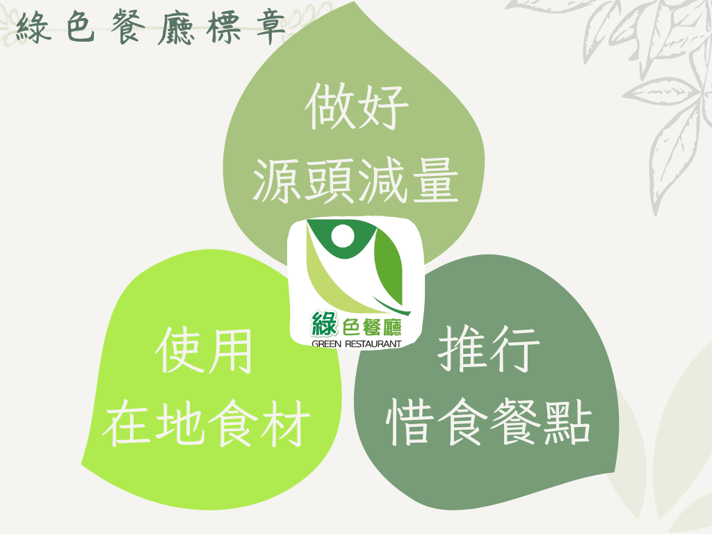
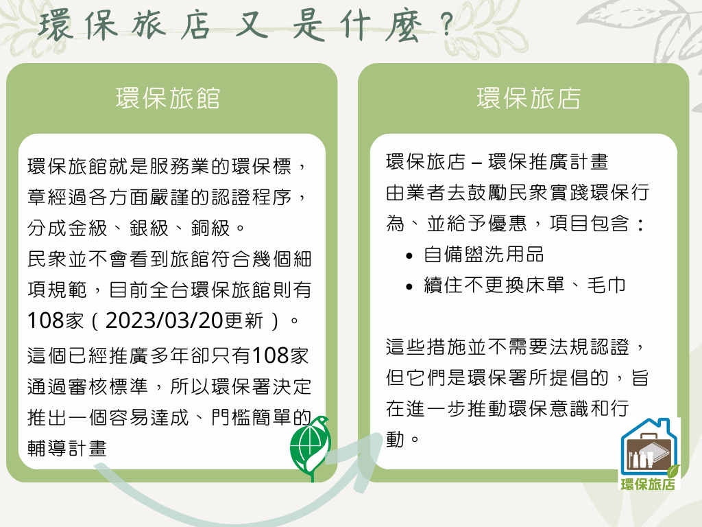

<div class="title-container">
    <div class="title">各縣市環保標章旅館/餐廳/公廁</div>
</div>
<div class="wrapper">
  <div class="select-container">
    <div class="instructions">
      <div>透過政府公開資料整理，選擇項目可以觀看</div>
      <div *ngIf="selectedOption === 'hotel'">各地擁有環保標章旅館的分佈情形</div>
      <div *ngIf="selectedOption === 'restaurant'">各地擁有環保標章餐廳的分佈情形</div>
      <div *ngIf="selectedOption === 'restroom'">各地擁有環保標章廁所的分佈情形</div>
    </div>
    <div class="input-container">
      <label></label>
      <button class="facility" (click)="selectOption('hotel')">旅館</button>
      <button class="facility" (click)="selectOption('restaurant')">餐廳</button>
      <button class="facility" (click)="selectOption('restroom')">公廁</button>
    </div>
  </div>
  <div class="container">
    <ng-container *ngIf="selectedOption === 'hotel'">
      <iframe src="http://34.80.175.10:5601/kibana_iframe/app/dashboards#/view/dd1c1bc0-2c40-11ee-afac-f7bcffaa2a37?embed=true&_g=(filters%3A!())" height="760" width="1440"></iframe>
    </ng-container>

    <ng-container *ngIf="selectedOption === 'restaurant'">
      <iframe src="http://34.80.175.10:5601/kibana_iframe/app/dashboards#/view/205b0da0-2c2e-11ee-afac-f7bcffaa2a37?embed=true&_g=(filters%3A!())" height="750" width="1440"></iframe>
    </ng-container>

    <ng-container *ngIf="selectedOption === 'restroom'">
      <iframe src="http://34.80.175.10:5601/kibana_iframe/app/dashboards#/view/26ab8590-2efe-11ee-afac-f7bcffaa2a37?embed=true&_g=(filters%3A!()%2CrefreshInterval%3A(pause%3A!f%2Cvalue%3A0)%2Ctime%3A(from%3A'2023-06-30T02%3A26%3A20.012Z'%2Cto%3Anow))" height="1800" width="1440"></iframe>
    </ng-container>
  </div>
  <div class="icon"><span class="star-icon">🌟</span>認識環保標章</div>
  <div class="tab">
    <mat-tab-group>
      <mat-tab label="綠色餐廳標章" class="custom-tab-label" >
        <ng-template matTabContent>
          
        </ng-template>
      </mat-tab>
      <mat-tab label="綠色宣言" class="custom-tab-label" >
        <ng-template matTabContent>
          
        </ng-template>
      </mat-tab>
      <mat-tab label="環保旅館" class="custom-tab-label" >
        <ng-template matTabContent>
          
        </ng-template>
      </mat-tab>
      <mat-tab label="環保旅店" class="custom-tab-label" >
        <ng-template matTabContent>
          
        </ng-template>
      </mat-tab>
    </mat-tab-group>
  </div>

  <!-- <div class="img-container">
    <div class="carousel">
      <div class="slide" [ngStyle]="{'transform': 'translateX(' + (-currentIndex * 100) + '%)'}">
        <div class="can" ></div>
        <div class="can" ></div>
        <div class="can" ></div>
        <div class="can" ></div>
      </div>
    </div>
  </div> -->
</div>

<div> 
  <!-- 回到首頁的按鈕，使用 Angular 的路由導航回首頁 -->
  <button class="back-to-home" (click)="navigateToHome()">回<br>首頁</button>
</div>

<footer class="footer">
  <div class="info">
    <div class="info-message">
      <span class="from"> 資料來源：</span>
      <a href="https://greenlife.epa.gov.tw/categories/accommodation" target="_blank">全民綠生活 - 旅館</a>
    </div>
    <div class="info-message">
      <a href="https://greenlife.epa.gov.tw/categories/restaurant" target="_blank">全民綠生活 - 餐廳</a>
    </div>
  </div>
</footer>